Hardening PAM¶
PAM est un élément central de notre système Linux, gérant les authentifications des utilisateurs. Il est donc primordial de le durcir.
Classification¶
Niveau ANSSI : minimal
Authentification
Gestion des comptes
Double authentification
Procédures¶
Commençons par installer la librairie libpam :
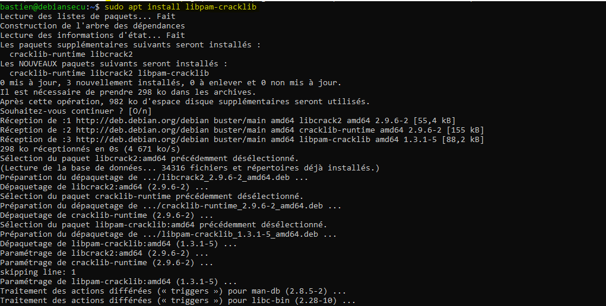
Désactivation du compte root¶
Le but de cette étapes est de bloquer l”accès au compte root. Pour cela, nous allons utiliser deux mécanismes :
interdiction au groupe wheel (groupe que nous allons créer pour les superutilisateurs) de se connecter en tant que root
désactivation du shell de l”utilisateur root
Le groupe wheel est lӎquivalent du groupe sudo chez RedHat.
Commençons par créer le groupe wheel :
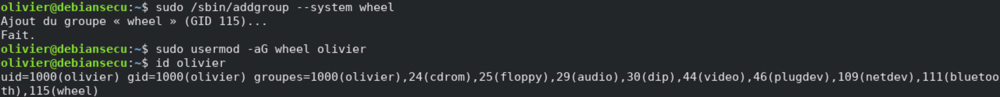
Bloquons ensuite l”accès au compte root aux membres du groupe wheel :
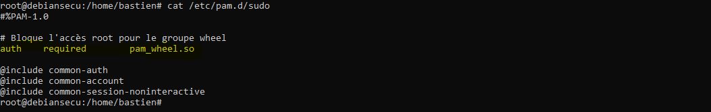
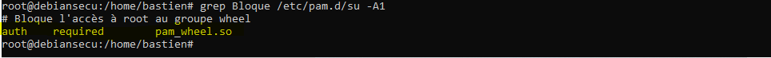
Pour que ce mécanisme fonctionne, il est impératif d”ajouter les superutilisateurs (membres du groupe sudo) au groupe wheel.
Désactivons enfin le shell de l”utilisateur root :
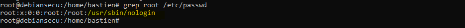
Politiques de password¶
Définissons une politique de password pour forcer les utilisateurs à respecter les bonnes pratiques de sécurité
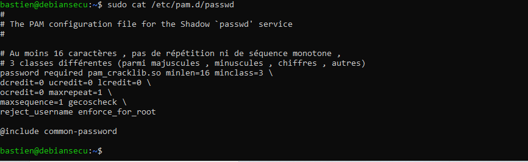
Testons cette politique :
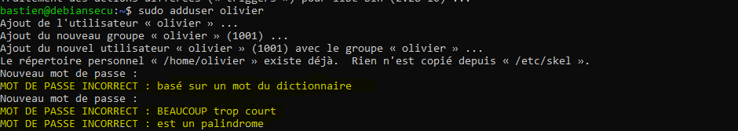
Définissons enfin une politique de stockage des mots de passe forte :
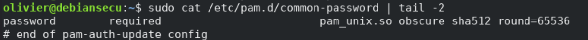
Double authentification¶
Utilisons Google authentificator pour implémenter de la double authentification dans le PAM de notre système Linux :
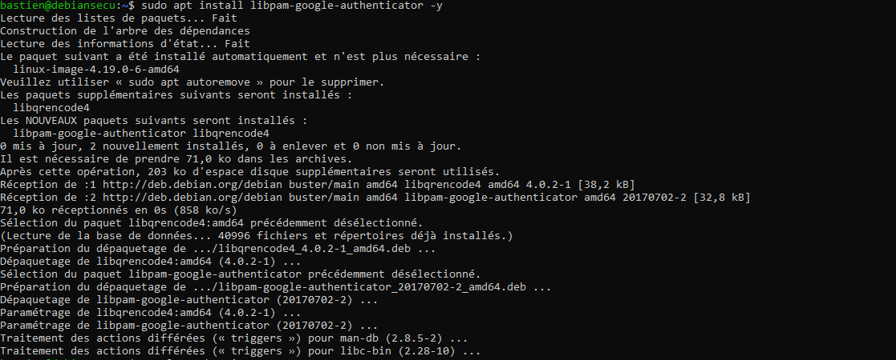
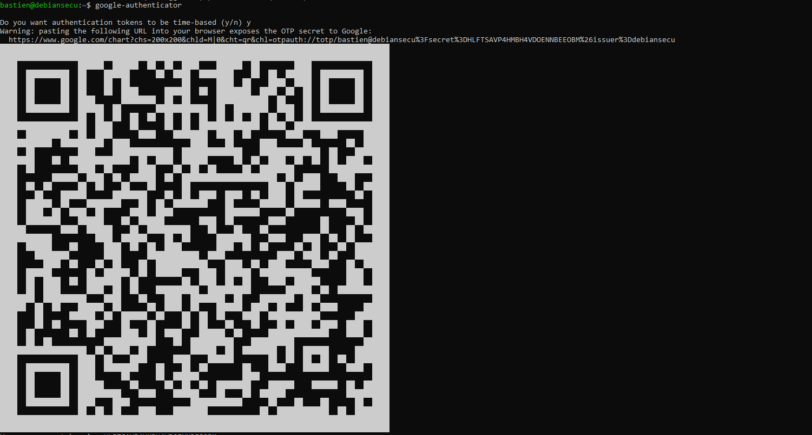
Configurons PAM et sshd pour qu”il utilise Google authentificator :
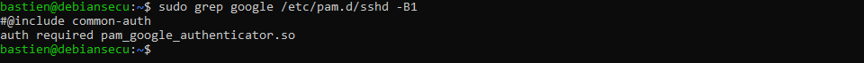
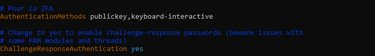
Vérifions que le mécanisme est fonctionel :
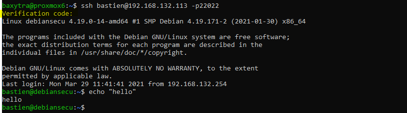